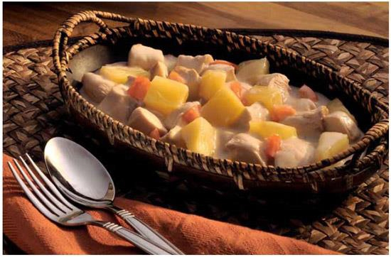

| Home | Desserts | Beverages | Dishes | Author | Credits |


Coconut Chicken with Pineapple
( Pininyahang Manok )
Ingredients:
- 2 tablespoons oil
- 3 cloves garlic, crushed with the side of knife
- 1 onion, sliced
- 1 1/2 lbs (750 g) boneless, skinless chicken breasts, thighs or drumsticks, cut into cubes
- 1 teaspoon salt
- 1 tomato, diced
- One 13 1/2-oz (400-ml) can coconut milk
- 2 1/2 cups (250 g) fresh or canned pineapple, cubed
- 1 tablespoon fish sauce
Cooking Procedure:
- Heat a skillet over medium heat and add 1 tablespoon of the oil.
- Add the garlic and saute until lightly browned.
- Add the onion and saute until translucent.
- Remove the sauted garlic and onion, and set aside.
- Toss the chicken cubes with the salt.
- To the same skillet over medium-high heat, add the remaining 1 tablespoon of the oil. Stir-fry the chicken for about 15 minutes or until lightly browned.
- Add the garlic and onion.
- Add the tomato, coconut milk and pineapple and simmer over medium-low heat for 10 minutes.
- Season with the fish sauce. Serve hot with steamed rice.